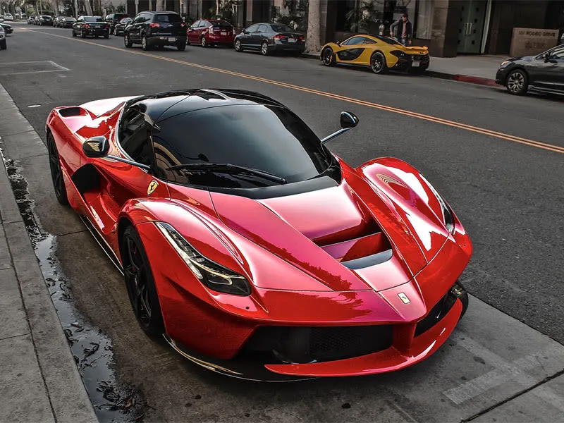
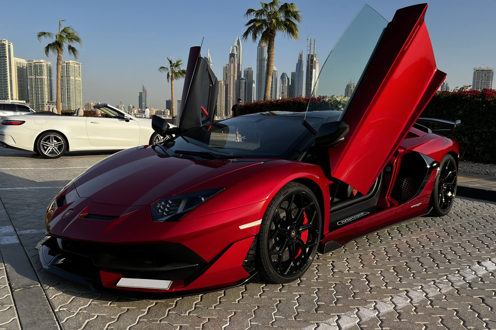
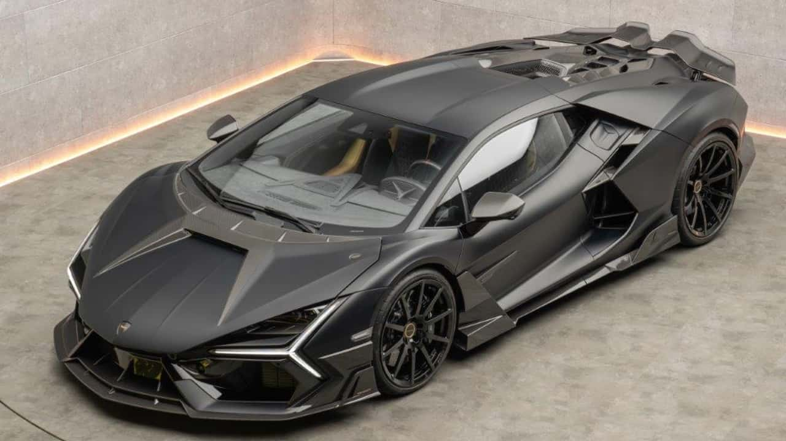
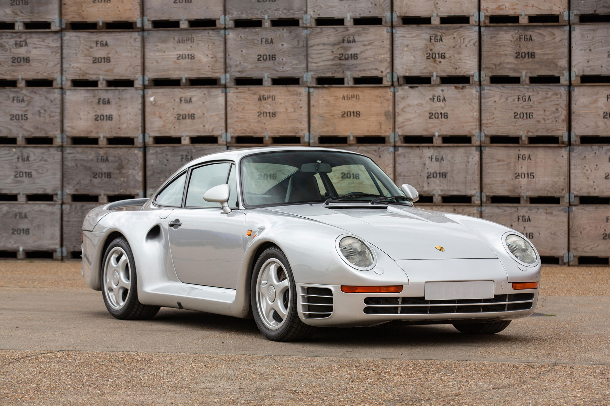
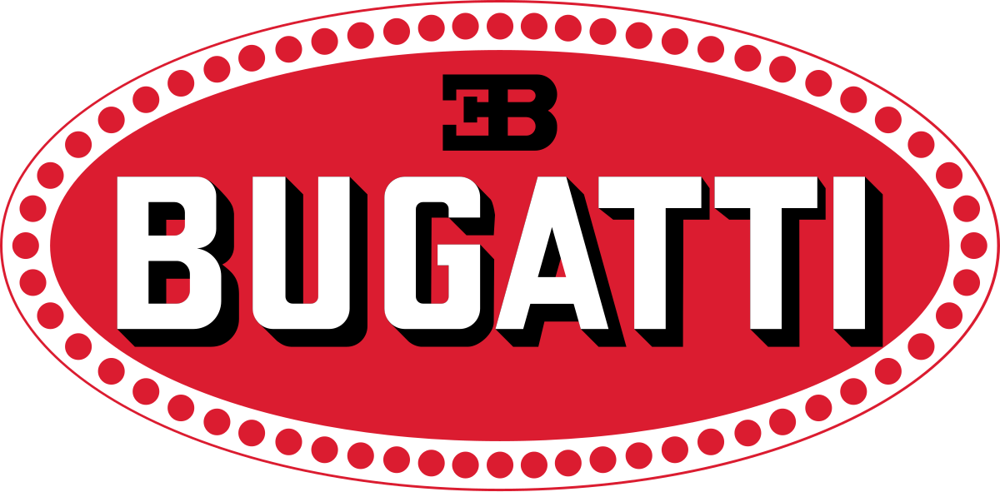
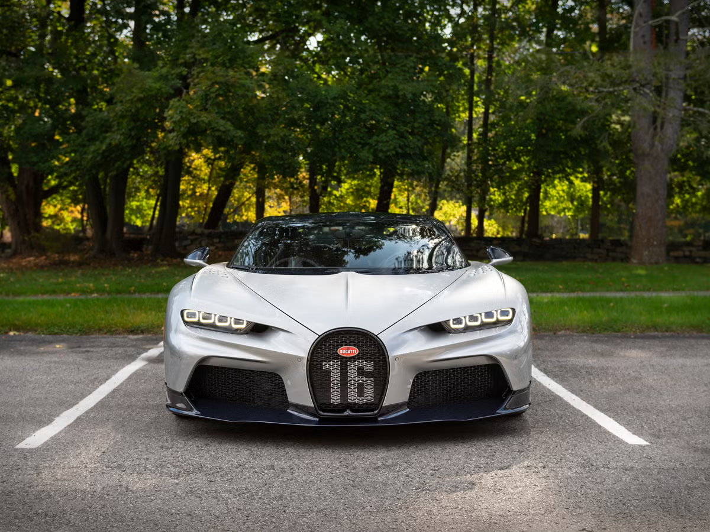
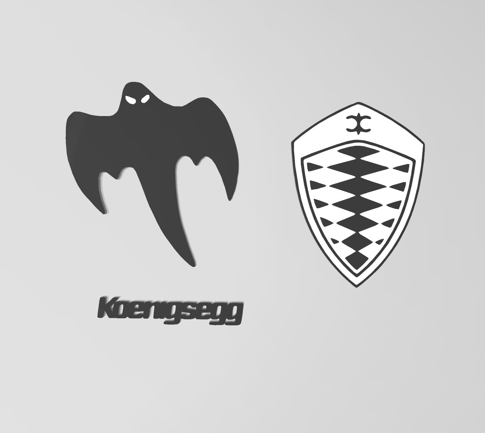
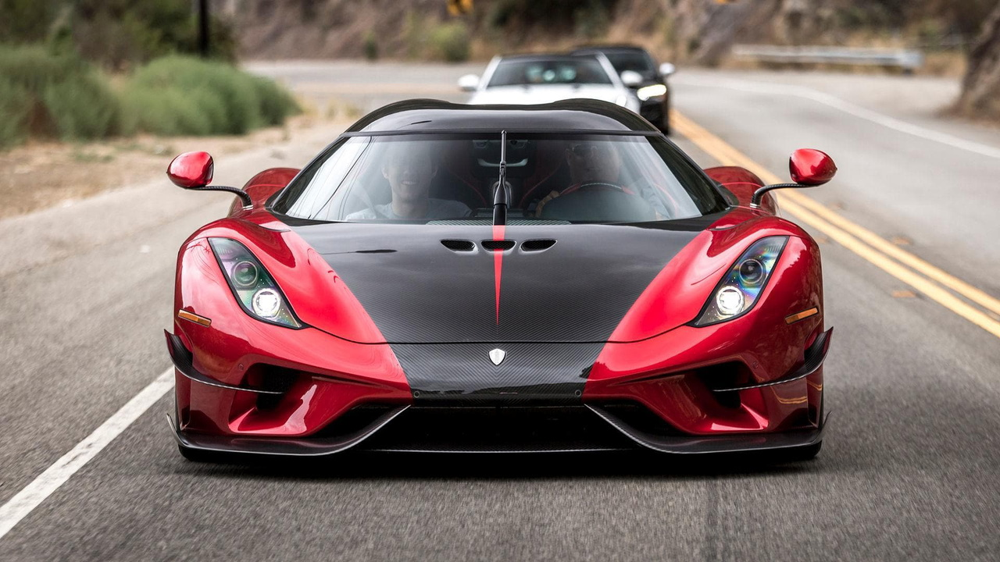

Aquest lloc utilitza cookies per millorar l'experiència.
Veluxe
Marques de Luxe i Superesportius
En aquesta pàgina trobaràs totes les marques principals de cotxes de luxe. Per a cada marca, una mica de la seva història (com van començar i per què són tan especials), una curiositat que no sabies, i els cotxes més destacats amb detalls tècnics.
Ferrari
Història
Enzo Ferrari va fundar la Scuderia el 1929 per córrer, només va començar a vendre cotxes de carrer el 1947 per pagar les carreres. Des de la 250 GTO fins al Purosangue, la Fórmula 1 al seu ADN.
Curiositat que no Sabies
Enzo Ferrari deia: «Si em demanes un cotxe perfecte, et donaré un cavall». Per això al principi només venia cotxes a qui ell considerava “digne” de portar-los.
Cotxes de Ferrari
Ferrari 488 Pista (2018-2019)
L'últim Ferrari V8 turbo 'pur' abans de l'era híbrida plena. 720 CV extrets del mateix motor 3.9 biturbo del 488 GTB, però amb plena 90% de components nous i una posada a punt de circuit brutal. Pesa només 1.280 kg en sec, fa 0-100 en 2.85 s i 0-200 en 7.6 s. Aerodinàmica heretada directe del 488 GTE de competició (amb l'S-Duct davanter i el difusor posterior més bestia mai vist en un Ferrari de carrer). Record de Fiorano per a un Ferrari V8, només 1.500 unitats aprox. Avui ja és un clàssic modern i val molt més que nou.

LaFerrari (2013-2018)
El primer híbrid de Ferrari i un dels tres 'hypercars sagrats' de la dècada (junt amb P1 i 918). Motor V12 6.3 atmosfèric = 963 CV totals i mès de 900 Nm. 0-100 en menys de 3 s. Totes venudes abans de sortir al mercat! Només 499 unitats de l'Aperta (descapotable). Totes venudes abans de l'anunci oficial només a clients VIP seleccionats per la pròpia Ferrari. Curiositat extra: el seu nom oficial no és 'LaFerrari' sino simplement 'LaFerrari' (l'article forma part del nom) perquè ja ho diu tot, segons Ferrari. Actualment ronda els 3-4 milions d'euros a subhasta... i segueix pujant.
Lamborghini
Història
Ferruccio Lamborghini era fabricant de tractors, però el 1963 va decidir fer cotxes esportius perquè no estava content amb el seu Ferrari. Va començar amb el 350 GT i des de llavors són sinònim de disseny radical i de 'per què no?'.
Curiositat que no Sabies
El nom de cada model (Miura, Aventador, Revuelto...) prové d'un toro de la lidia famós o d'una raça de toros. És el seu símbol de força i agressivitat.
Cotxes de Lamborghini

Lamborghini Aventador (2011-2022, Inclòs SVJ)
L'últim gran V12 atmosfèric pur de Lamborghini. Va arribar el 2011 amb motor V12 6.5, el disseny més agressiu fins llavors: portes tisora i línies que semblen un caça. La versió màxima va ser l'SVJ (2018-2021): 770 CV, aerodinàmica activa ALA 2.0, 350 kg de downforce i el record absolut de Nürburgring per a un cotxe de producció (6:44.97 fins que Porsche el va batre). Avui és un dels Lamborghini moderns que més valor guanya. Només 900 coupés + 63 unitats especials Ultimae. Avui és un dels Lamborghini moderns que més valor guanya.

Lamborghini Revuelto (2023- Actualitat)
El nou rei! Primer Lamborghini híbrid endollable de sèrie (HPEV). Conserva el V12 6.5 atmosfèric (825 CV, el més potent mai fet per la marca) + 3 motors elèctrics per un total de 1.015 CV totals. 0-100 km/h en 2.5 s i més de 350 km/h. Pot circular en silenci en mode elèctric en ciutat. Disseny encara més futurista, interior més refinat i el dimoni al primer lloc de les primeres entregues ja estan exhaurides fins 2026-2027.
Porsche
Història
Ferdinand Porsche va crear l'empresa el 1931 com a estudi d'enginyeria. El primer cotxe amb el nom Porsche va ser el 356 (1948) i el 911, nascut el 1963, segueix viu avui amb més de 60 anys i encara ten una identitat tan clara.
Curiositat que no Sabies
El 70% de tots els Porsche fabricats des del 1948 encara circulen avui! És la marca amb la major longevitat i fiabilitat dels seus models.
Cotxes de Porsche
Porsche 911 GT3 RS (Especialment 991 / 992)
La bèstia sense turbo ni híbrid: 4.0 atmosfèric de 520 CV (991.2) o 525 CV (992), canvi PDK o manual (segons generació) i una aerodinàmica que sembla un cotxe de Le Mans. Dissenyat per carreres: downforce a 780 kg/h. Pesa menys de 1.450 kg i el seu objectiu vital és fer-te de felicitat a qualsevol revolt. Record de Nürburgring per a cotxe amb matricula varies vegades (últim 992 GT3 RS va fer 6:44.8 el 2022). És el 911 que compraries quan ja no val l'excusa 'és que és molt carrer'.

Porsche 959 (1986-1988)
El cotxe que va canviar les regles del joc. L'any 1986 Porsche va llançar un monstre amb tracció total, suspensió activa regulable en alçada, 450 CV biturbo i 320 km/h de velocitat màxima... quan els Ferrari i Lamborghini encara eren atmosfèrics de 280-300 km/h. Només 292 unitats de carrer + poques de competició. Avui val entre 1.5 i 2 milions d'euros i és considerat un dels supercars moderns. Molts diuen que el 959 va estar 20 anys avançat al seu temps... i encara sembla futurista.
Bugatti

Història
Ettore Bugatti fabricava obres d'art amb rodes als anys 20-30. La marca va desaparèixer el 1956 però el 1998 va ressuscitar sota Volkswagen. El Veyron (2005) va ser el primer cotxe de producció amb més de 1.000 CV i 400 km/h. Avui el Tourbillon porta el limit encara més lluny.
Curiositat que no Sabies
Per provar el Veyron a velocitat màxima cal una pista especial, pneumàtics que duren només 15 minuts a 400 km/h i… canviar-los cada 4.000 km (cost: uns 30.000 € el joc).
Cotxes de Bugatti
Bugatti Veyron (2005-2015)
El cotxe que va trencar el món. Primer hipercar de producció amb més de 1.000 CV (1.001 CV del W16 8.0 quad-turbo), 407 km/h de velocitat màxima (record mundial durant anys) 0-100 en 2.5 s. Per aconseguir-ho, necessitava 10 radiadors, pneumàtics especials Michelin que costaven 30.000 € i 1 lloc 1 duraven només 15 minuts a tope... i els discos de carboni-ceràmica s'esgotaven als 3 intents. 450 unitats en total (300 coupés + 150 Grand Sport descapotables) + les versions Super Sport (1.200 CV 431 km/h). Totes venudes. Avui valen el doble o triple.

Bugatti Chiron (2016-Avui)
El successor que va dir 'aigua' a la sèrie Super Sport 300+ va arribar a 490.48 km/h el 2019 (és va convertir en el primer cotxe de producció a arribar als 300 mph). 8.0 W16 quad-turbo, 1.500 CV (1.600 en algunes versions) i un xassís que sembla de nau espacial. Limitat electrònicament a 'només' 420 km/h per seguretat, però amb clients especials que ho desbloquegen. Cada cotxe es pot personalitzar fins a més mínim detall i alguns clients s'han gastat més de 15 milions en una sola unitat.
Koenigsegg

Història
Christian von Koenigsegg va fundar la marca el 1994 amb 24 anys i el somni de fer el cotxe perfecte. El primer model (CC8S) va arribar el 2002. Avui models com el Jesko o el Gemera combinen potències de bojos (més de 2.000 CV amb bioetanol) i tecnologia que sembla de nau espacial.
Curiositat que no Sabies
Tots els cotxes Koenigsegg tenen el famós “ghost emblem” al morro: l’escut de la marca fet amb una sola peça d’or o carboni i que pesa menys de 20 grams.
Cotxes de Koenigsegg

Koenigsegg Regera (2015-2022)
El cotxe que va canviar les regles: primer a arribar a 447 km/h (Regera RS el 2017). Motor V8 5.0 biturbo fet per ells mateixos, 1.360 CV amb bioetanol. Tracció posterior, sense ABS ni controls electrònics en mode pur (per als valents). Només 25 unitats, i avui valen milions. Va batre 5 records mundials en un dia: 0-400-0 km/h en 36.44 s, entre d'altres.